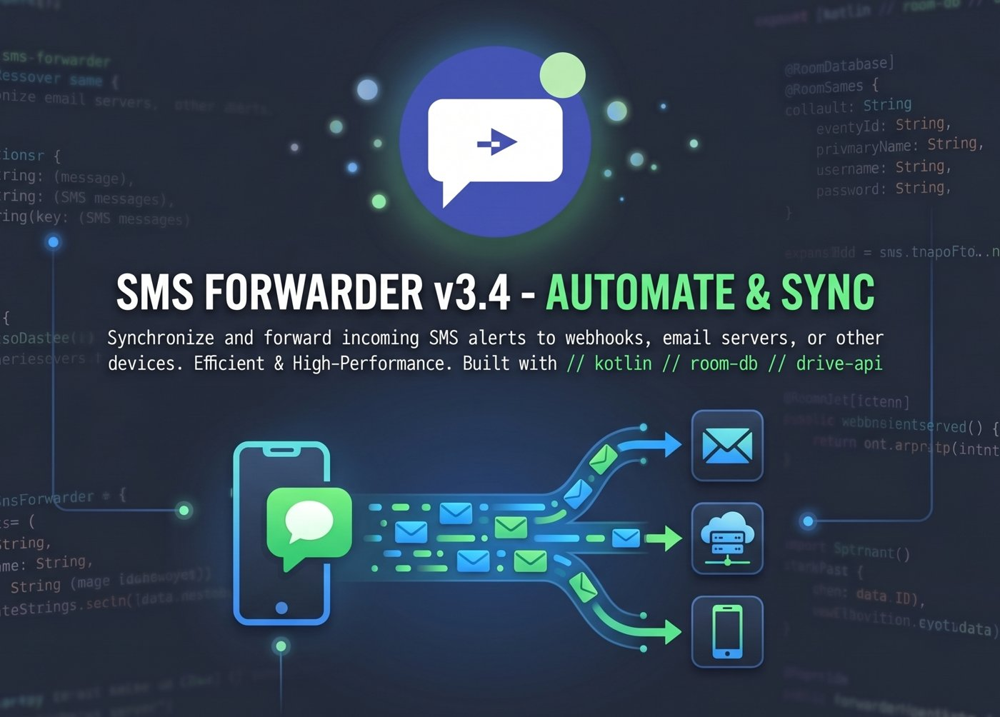

Android app
SMS Forwarder
Auto-Forward Android SMS to Webhook, Email & Phone
A free Android app built in Kotlin that automatically forwards incoming SMS messages to your webhook, email server, or another phone — with Auto-OTP extraction, Dual-SIM support, Regex rules, and real-time Loop Protection. All processing is local. No cloud, no ads, no root required. Works on Android 10 through 15.
- Active
- v3.4.0 — versionCode 7
- Free to Use (Proprietary)
- No Root Required
- Kotlin
- Room 2.8.4
- OkHttp 4.12.0
- Drive API v3
- javax.mail SMTP
- Coroutines
- ForegroundService
- Material 3
- minSdk 29
- No Root

Overview
What is SMS Forwarder?
SMS Forwarder is a free Android app that runs silently in the background and automatically forwards every incoming SMS to a destination you configure — a webhook URL (HTTP POST), an email inbox (via your own SMTP server), or another phone number. Unlike other SMS gateway apps, it requires no account, no subscription, no cloud server, and no root access.
It is particularly popular for automating OTP and 2FA code delivery, building SMS-to-webhook pipelines for tools like n8n, Zapier, and Make.com, and forwarding bank alerts from a secondary SIM card. Because all processing is on-device, your messages never leave your phone — making it the most privacy-respecting SMS automation tool available.
Use cases
Use cases
Forward OTP & 2FA Codes to Email
Auto-detect 4–8 digit codes with the Auto-OTP feature. Route them to your inbox via SMTP for automated 2FA workflows or remote access — useful when your primary phone is unavailable.
→ "forward OTP to email Android"SMS to n8n / Zapier / Make Webhook
Turn your Android into an SMS gateway. POST any SMS as a JSON payload to your n8n workflow, Zapier Zap, or custom API. Use Expert Mode to customise payload shape and auth headers.
→ "forward SMS to webhook Android"Forward Bank & Alert SMS
Create sender-specific rules to match your bank's alphanumeric sender ID (e.g. "HDFC", "VM-AMAZON"). Extract amounts or account numbers using Regex and route them anywhere.
→ "forward bank SMS automatically Android"Dual-SIM Separation & Routing
Run a business SIM and personal SIM on the same phone. Forward all messages from SIM 2 to your work email, and SIM 1 to a personal webhook — with SIM-specific rules.
→ "dual SIM SMS forwarder Android"SMS-Driven Home Automation
Trigger Home Assistant, Node-RED, or any local server by forwarding a specific SMS to your webhook. Parse the message with Regex to extract commands and pass them to your automation pipeline.
→ "SMS automation Android no cloud"Private Monitoring — Zero Cloud
Monitor an elderly family member's or employee's device for specific alert SMS — completely privately. No messages are stored on any server. All data stays on your device.
→ "SMS forwarder no cloud storage Android"Features
Features
3-Way Forwarding Destinations
Route SMS to Webhook URL (JSON POST via OkHttp), Email (built-in SMTP — no relay), or Phone Number (via SmsManager). Mix and match — create one rule per destination type.
Auto-OTP Extraction
Detects any 4–8 digit numeric code automatically. Exposed as {OTP} placeholder in your message template — no regex needed for standard OTP formats.
Regex Data Extraction
Write custom regex to extract any pattern — amounts, order IDs, account numbers. Extracted groups available as template variables in webhook JSON or email body.
Advanced Sender & Keyword Filtering
Match by sender address (exact or partial — supports alphanumeric IDs like "HDFC", "VM-AMAZON") and/or keyword (case-insensitive body search). Multiple independent rules supported.
Dual-SIM Support
Per-rule SIM targeting: Any SIM, SIM 1 only, or SIM 2 only. Reads Subscription ID from incoming intents. Choose sending SIM for SMS forwards.
Real-Time Loop Protection
RuleValidator analyses the rule graph before every forward to detect infinite chains. Blocks loops instantly. Flags affected rules with a red warning in the UI.
Built-in SMTP Email Client
No third-party relay. Uses android-mail 1.6.8 (javax.mail). Configure any SMTP server with SSL/TLS. Supports Gmail App Passwords, Outlook, Proton Bridge.
Webhook + Expert Mode
POST JSON to any endpoint — n8n, Zapier, Make, your own API, IFTTT. Expert Mode unlocks full JSON template customisation and custom HTTP headers (Bearer tokens, API keys).
International Country Picker
Emoji-flag searchable picker for 150+ countries. Understands regional names — searching "India" also surfaces "Bharat". Built into the split-field phone number UI in the rule editor.
Private Google Drive Backup
Serialises your entire rule list to sms_forwarder_rules.json in your own Drive using DRIVE_FILE scope (app-private). Restore rules on new devices instantly. Zero developer-side storage.
Battery-Resilient Background Service
ForwardingService as ForegroundService + BootReceiver for reboot persistence + START_STICKY + battery optimisation exemption request = runs 24/7 reliably.
For developers
Tech stack
/**
* @project SMS Forwarder v3.4.0 (versionCode 7)
* @author Anirban Routh — github.com/anirban1011
* @license Proprietary / Free to Use | minSdk 29 (Android 10) → targetSdk 36 (Android 15)
*/
const dependencies = {
// Core
core: "androidx.core:core-ktx:1.10.1",
appcompat: "androidx.appcompat:appcompat:1.6.1",
material: "com.google.android.material:material:1.10.0",
activity: "androidx.activity:activity-ktx:1.13.0",
// Persistence
room: "androidx.room:room-runtime:2.8.4", // + room-ktx + kapt
// Lifecycle
viewmodel: "lifecycle-viewmodel-ktx:2.10.0",
livedata: "lifecycle-livedata-ktx:2.10.0",
// Networking
okhttp: "com.squareup.okhttp3:okhttp:4.12.0",
// Email (SMTP)
mail: "com.sun.mail:android-mail:1.6.8",
activation: "com.sun.mail:android-activation:1.6.8",
// Google Drive Backup
auth: "play-services-auth:21.3.0",
driveClient: "google-api-client-android:2.7.2",
driveApi: "google-api-services-drive:v3-rev20241027-2.0.0",
// Serialisation
gson: "com.google.code.gson:gson:2.11.0"
};Technical flow
Technical message flow
SMS received → forwarded, step by step
- 01
Detection —
SmsReceiver(priority 999)A high-priority
BroadcastReceiverregistered forandroid.provider.Telephony.SMS_RECEIVEDintercepts every incoming SMS before other apps. CallsgoAsync()to avoid ANR on the main thread, buying 10 seconds of background processing time. - 02
Extraction —
getMessagesFromIntent()Uses
Telephony.Sms.Intents.getMessagesFromIntent()to parse raw PDU data and extract sender address, message body, and Subscription ID (for Dual-SIM identification). Multi-part messages are concatenated automatically. - 03
Rule Loading —
RuleRepositoryonDispatchers.IOA Kotlin Coroutine on
Dispatchers.IOqueriesRuleDao(Room 2.8.4) for all enabledForwardingRuleentities. No main thread blocking. Results are filtered in-memory. - 04
Filtering —
processMessage()Each rule is evaluated:
senderMatches()(exact/partial),keywordMatches()(case-insensitive body search),simMatches()(Subscription ID). All three must pass. A rule with no sender/keyword filter matches all messages. - 05
Loop Validation —
RuleValidatorRuleValidatoranalyses the rule graph to detect circular forwarding chains (A→B→A). If a loop is found, the forward is blocked, the rule is flagged red in the database, andLiveDatapropagates the warning to the UI instantly. - 06
Template Formatting —
formatMessage()Resolves placeholders:
{sender}→ originating number/ID,{body}→ full message,{OTP}→ auto-detected 4–8 digit code,{regex_group_N}→ custom Regex capture. Webhook JSON templates are also rendered here. - 07
Execution —
Forwarderinterface dispatchRule destination type dispatches to the concrete implementation:
SmsForwarder→SmsManager.sendTextMessage().EmailForwarder→javax.mailSMTP session.WebhookForwarder→ OkHttp 4.12.0 POST with JSON body and optional custom headers.
Comparison
Comparison with other apps
SMS Forwarder vs competitors
| Feature | SMS Forwarder (Anirban Routh) |
httpSMS | pppscn/SmsForwarder | SMS Auto Forwarder |
|---|---|---|---|---|
| Price | Free to Use | Free tier | Free (MIT) | Freemium |
| No Account Required | ✓ Zero signup | ✗ Account needed | ✓ | ✗ Account needed |
| Webhook Support | ✓ + Expert Mode | ✓ | ✓ | ✓ |
| Built-in SMTP Email | ✓ javax.mail | ✗ | Partial | ✓ |
| Auto-OTP Extraction | ✓ Built-in | ✗ | ✗ | Partial |
| Regex Extraction | ✓ | ✗ | ✓ | ✗ |
| Dual-SIM Support | ✓ Per-rule | ✗ | Limited | Limited |
| Loop Protection | ✓ Real-time | ✗ | ✗ | ✗ |
| No Cloud / Privacy-first | ✓ 100% local | ✗ Server relay | ✓ | ✗ Cloud sync |
| No Root Required | ✓ | ✓ | ✓ | ✓ |
Highlights
Highlights
Visual Safety System
Red warning on loop-detected rules. Yellow warning for config issues (e.g. SMTP not configured). No digging through logs — problems are visible at a glance on the rule card.
100% Privacy-First
Zero telemetry. Zero ads. All SMS processing is on-device only. Drive backup uses DRIVE_FILE scope — even the developer cannot read your rules file. No account, no tracking, no server dependency of any kind.
Developer Expert Mode
Custom JSON payload templates with any structure you need. Inject HTTP headers per rule (Bearer tokens, X-API-Key). Ideal for integrating with n8n, Zapier, Make.com, Home Assistant webhooks, or internal APIs.
Permissions
Permissions
// All permissions are declared in AndroidManifest.xml with clear purpose
RECEIVE_SMSREAD_SMSSEND_SMSREAD_PHONE_STATEINTERNETACCESS_NETWORK_STATERECEIVE_BOOT_COMPLETEDFOREGROUND_SERVICEFOREGROUND_SERVICE_REMOTE_MESSAGINGPOST_NOTIFICATIONSREQUEST_IGNORE_BATTERY_OPTIMIZATIONSFAQ
Frequently asked questions
13 questions — click to expand.
What is an SMS Forwarder app for Android?
An SMS Forwarder is an Android app that automatically intercepts incoming text messages and relays them to another destination — such as a webhook URL, email inbox, or another phone number — without any manual action. SMS Forwarder v3.4 uses a high-priority BroadcastReceiver (priority 999) and a persistent ForegroundService, ensuring zero missed messages even with the screen off. No root required.
How do I forward SMS to a webhook URL on Android?
Download the free APK, install it, tap + (FAB) to add a rule, choose Webhook as destination, paste your URL (n8n Production URL, Zapier Catch Hook, Make.com webhook, your own REST API), set any sender/keyword filter, and toggle ON. Enable Expert Mode to customise the JSON payload shape and add HTTP headers like Authorization: Bearer TOKEN. The app POSTs {sender, body, timestamp} and any extracted values.
How do I automatically forward OTP codes to email?
Go to Settings → SMTP Configuration and enter your mail server details (host, port, username, password). Then add a rule: choose Email destination, enter your email address. Set sender filter to your bank's ID (e.g. "HDFC") or keyword "OTP". Enable Auto-OTP extraction mode. The {OTP} placeholder will contain the extracted code. Every matching SMS is forwarded to your inbox within seconds — completely automatically, even when your phone is locked.
How do I forward SMS to n8n or Zapier from Android?
In n8n: create a Webhook node → copy the Production URL. In Zapier: Webhooks by Zapier → Catch Hook → copy the URL. In Make.com: add a Custom Webhook module → copy the URL. Then in SMS Forwarder: add a rule, choose Webhook, paste the URL. Enable Expert Mode to add Authorization headers or customise the JSON template to match your automation platform's expected format. The app will trigger your workflow on every matching SMS in real time.
Does SMS Forwarder work in the background on Android 10, 11, 12, 13, 14, 15?
Yes. ForwardingService is a ForegroundService with a persistent status bar notification — Android cannot kill it automatically. BootReceiver restarts it after reboots. START_STICKY tells Android to recreate it if killed by memory pressure. The app prompts you to disable battery optimisation on first launch via Settings.ACTION_REQUEST_IGNORE_BATTERY_OPTIMIZATIONS. Additionally, SmsReceiver (priority 999) intercepts messages independently of the service state.
Does SMS Forwarder support Dual-SIM phones?
Yes. The app reads the Subscription ID from the incoming SMS intent to identify which SIM received it. Each forwarding rule can independently target Any SIM, SIM 1 only, or SIM 2 only. When forwarding to another phone number, you can also choose which SIM to use for sending the outgoing message.
Is SMS Forwarder private? Are my messages stored on a server?
SMS Forwarder is 100% privacy-first. All SMS processing happens locally on your device — no messages, no metadata, no rule data is ever sent to the developer or any third-party server. There is no analytics, no telemetry, no ads. The optional Google Drive backup uses DriveScopes.DRIVE_FILE (restricted scope — the app can only access files it created) and saves only your rule configurations to your own Drive — completely inaccessible to the developer.
Does SMS Forwarder require root?
No. SMS Forwarder uses only standard Android APIs — the SMS_RECEIVED broadcast intent and SmsManager. It works on any non-rooted Android 10+ device from any manufacturer (Samsung, Xiaomi, OnePlus, Realme, Vivo, Oppo, stock Android). No modifications to the system partition are needed or made.
What is Loop Protection and why is it important?
Without loop detection, if Phone A (running SMS Forwarder) forwards to Phone B (also running SMS Forwarder), and Phone B has a rule that forwards back to Phone A, you get an infinite SMS chain that can generate hundreds of messages per minute. RuleValidator detects these circular graphs before execution and blocks the forward. Affected rules are marked with a red warning indicator in the MainActivity card list so you can fix the configuration.
How does the Regex extraction feature work?
In AddEditRuleActivity, choose "Regex" as the extraction mode and enter a regular expression with capture groups. SMS Forwarder applies it to every matching message body and exposes the captured groups as template variables. Useful for extracting: transaction amounts from bank alerts, order IDs from delivery SMS, custom OTP formats that Auto-OTP doesn't detect, or any structured data from a specific SMS format.
Is SMS Forwarder free? What is the pricing?
Yes, SMS Forwarder v3.4.0 is completely free to download and use — with no in-app purchases, no ads, no subscriptions, and no accounts required. The app is proprietary, closed-source, and distributed directly on GitHub as a pre-compiled APK.
Is SMS Forwarder available on the Google Play Store?
SMS Forwarder is distributed as a direct APK download from GitHub, not through the Google Play Store. This is common for SMS-reading apps because Google Play has strict restrictions on apps that access SMS content. Download the APK directly from the GitHub Releases page. Google Play Protect may warn you — this is a standard false positive for SMS-permission apps from trusted repositories on GitHub.
What Android version is required?
SMS Forwarder v3.4.0 requires Android 10 (API 29) or higher. It targets Android 15 (API 36). Tested and confirmed working on Android 10, 11, 12, 13, 14, and 15. Compatible with all major Android OEM skins: One UI (Samsung), MIUI/HyperOS (Xiaomi), OxygenOS (OnePlus), Realme UI, ColorOS (Oppo), OriginOS (Vivo), and stock Android.
Install
Download & install
Free APK — no Play Store, no account, no root.
SMS Forwarder v3.4.0
Free Android APK — no Play Store, no account required
- Android 10+ (API 29+), targets Android 15 (API 36)
- No root required — standard Android APIs only
- Free to Use — no hidden costs, no ads
- No ads, no telemetry, no account, no cloud
- Works on all Dual-SIM Android phones
Quick install — takes ~2 minutes
- Download
SMS_Forwarder_v3.4.0.apk - Open on Android 10+ phone
- Allow "Install from unknown sources"
- Grant SMS, Internet & Notification perms
- Disable battery optimisation when prompted
- Tap FAB (+) → Add rule → Done ✓

Built by Anirban Routh
Full-stack developer building web apps, Android apps and automation tools. MCA student at the University of North Bengal.